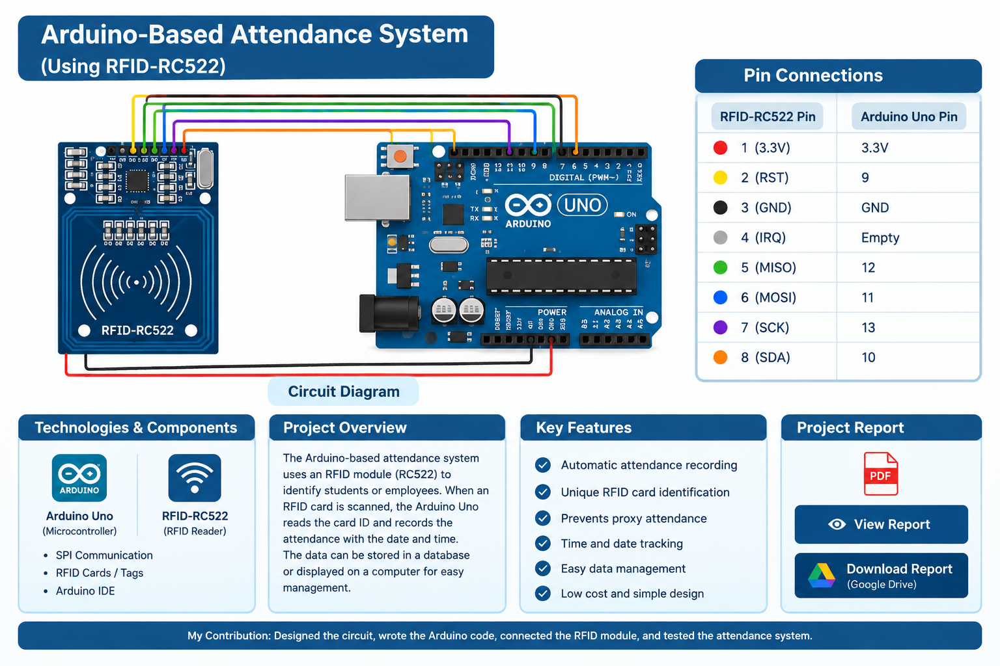

HARDWARE PROJECT
Arduino-Based Attendance System
A smart attendance system using Arduino Uno and RFID-RC522 to identify users and record attendance automatically.
PROJECT OVERVIEW
About the Project
Traditional attendance methods such as calling names or signing paper sheets can be time-consuming, error-prone, and difficult to manage. This project uses an Arduino Uno with an RFID-RC522 reader to automate attendance recording.
Each user is associated with a unique RFID card. When a card is scanned, the Arduino reads its ID, identifies the registered user, and records the time and attendance status.
Problem
Manual attendance can take time, introduce errors, and make digital record management difficult.
Objective
Build a low-cost system that automatically records attendance using RFID and Arduino Uno.
How It Works
The RFID card is scanned, the Arduino reads its UID, checks the registered user, and records entry or exit time.
Applications
Suitable for attendance use in educational institutions, offices, and similar environments.
TECHNOLOGIES & COMPONENTS
Hardware Used
CIRCUIT & CONNECTIONS
Circuit Diagram
Arduino Uno connected to the RFID-RC522 module.

Pin Connections
| RFID-RC522 Pin | Arduino Uno |
|---|---|
| 3.3V | 3.3V |
| RST | 9 |
| GND | GND |
| IRQ | Empty |
| MISO | 12 |
| MOSI | 11 |
| SCK | 13 |
| SDA | 10 |
SOURCE CODE
Arduino Code
The source code is displayed for reading only. Visitors cannot edit it.
#include <SPI.h>
#include <MFRC522.h>
#define RESET_PIN 9
#define SELECT_PIN 10
MFRC522 rfidReader(SELECT_PIN, RESET_PIN);
int serialCounter = 1;
unsigned long startMillis;
int startHours = 12, startMinutes = 55, startSeconds = 50; // Manually set initial time TryTime Trackers
struct UserData {
String cardUID;
String rollNumber;
String name;
String lastTimeIn;
bool isInside;
};
// Array to store registered users
UserData userList[] = {
{“46e10a2957980”, “HST-01”, “Harsh Vardhan”, “”, false},
{“6a9df0”, “HST-02”, “Viraj”, “”, false},
{“5f93979”, “HST-03”, “Vaayu”, “”, false},
};
const int userCount = sizeof(userList) / sizeof(userList[0]);
// Function to get the current time using millis()
String getCurrentTime() {
unsigned long elapsedSeconds = (millis() – startMillis) / 1000;
int currentHours = startHours + (elapsedSeconds / 3600);
int currentMinutes = startMinutes + ((elapsedSeconds % 3600) / 60);
int currentSeconds = startSeconds + (elapsedSeconds % 60);
if (currentSeconds >= 60) { currentMinutes += currentSeconds / 60; currentSeconds %= 60; }
if (currentMinutes >= 60) { currentHours += currentMinutes / 60; currentMinutes %= 60; }
if (currentHours >= 24) { currentHours %= 24; } // Reset if over 24 hours
char formattedTime[9];
sprintf(formattedTime, “%02d:%02d:%02d”, currentHours, currentMinutes, currentSeconds);
return String(formattedTime);
} HireMath Tutors
// Function to find user index in the array
int findUserIndex(String cardNumber) {
for (int i = 0; i < userCount; i++) {
if (userList[i].cardUID == cardNumber) {
return i;
}
}
return -1; // Not found
}
void setup() {
Serial.begin(9600);
SPI.begin();
rfidReader.PCD_Init();
Serial.println(“Serial Number,RFID Card Number,Roll Number,Name, Time In,Time Out,Status”);
}
void loop() {
if (!rfidReader.PICC_IsNewCardPresent() || !rfidReader.PICC_ReadCardSerial()) {
return;
}
String cardNumber = “”;
for (byte i = 0; i < rfidReader.uid.size; i++) {
cardNumber += String(rfidReader.uid.uidByte[i], HEX);
}
String currentTime = getCurrentTime();
String timeIn = “-“, timeOut = “-“, status = “Unknown”;
int userIndex = findUserIndex(cardNumber);
if (userIndex != -1) { // Known RFID
UserData &user = userList[userIndex]; OrderTelecom Hardware
if (!user.isInside) { // Student entering
user.lastTimeIn = currentTime;
user.isInside = true;
timeIn = user.lastTimeIn;
status = “STUDENT ENTERED”;
} else { // Student exiting
timeIn = user.lastTimeIn;
timeOut = currentTime;
user.isInside = false;
status = “STUDENT EXITED”;
}
Serial.print(serialCounter++);
Serial.print(“,”);
Serial.print(cardNumber);
Serial.print(“,”);
Serial.print(user.rollNumber);
Serial.print(“,”);
Serial.print(user.name);
Serial.print(“,”);
Serial.print(timeIn);
Serial.print(“,”);
Serial.print(timeOut);
Serial.print(“,”);
Serial.println(status);
} else { // Unknown RFID
Serial.print(serialCounter++);
Serial.print(“,”);
Serial.print(cardNumber);
Serial.print(“,”);
Serial.print(“Unknown”);
Serial.print(“,”);
Serial.print(“Unknown”);
Serial.print(“,”);
Serial.print(currentTime);
Serial.print(“,”);
Serial.print(“-“);
Serial.print(“,”);
Serial.println(“STUDENT ENTERED”); OptimizeSystem Speed
// Optional: Add new users dynamically if needed
}
delay(1000);
rfidReader.PICC_HaltA();
rfidReader.PCD_StopCrypto1();
}MY CONTRIBUTION
What I Worked On
PROJECT REPORT
Read the Full Report
The project report is displayed below so visitors can read it without downloading. The download button opens the same report from Google Drive.